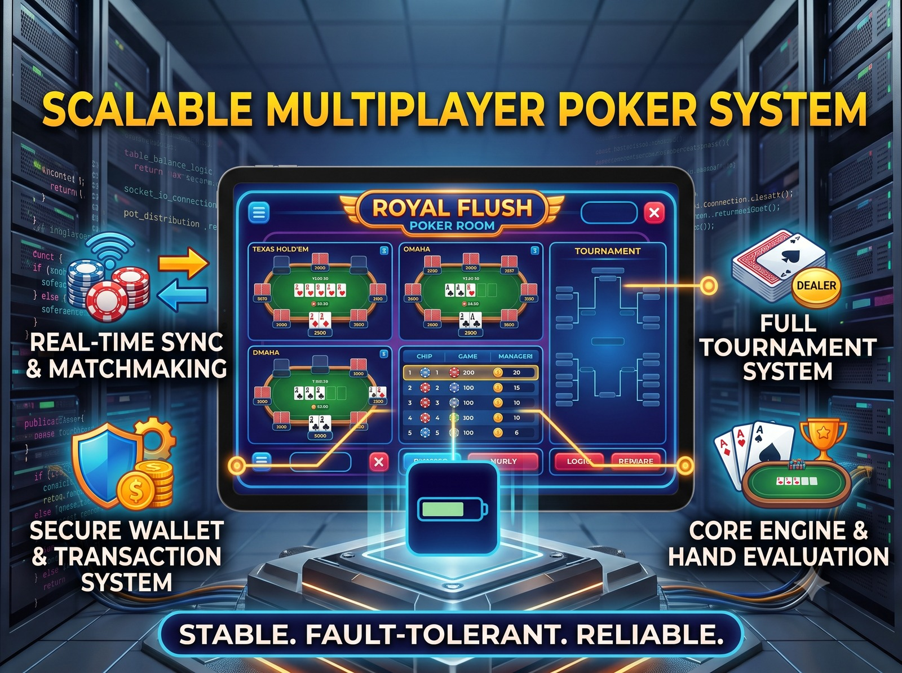

1. Executive Summary & System Scope
Poker is one of the most mathematically rigorous and state-sensitive real-time applications to engineer. Unlike casual card games, poker involves high-stakes financial transactions, strict turn timers, multi-tier side pot splits across uneven all-in chip stacks, and server-authoritative security where client manipulation must be impossible.
I engineered the core backend architecture for Swisspoker, encompassing over 50 database models spanning users, wallets, chip accounting, table states, tournament schedules, blind progressions, clubs, agent hierarchies, and audit logging.
2. Supported Variants & Hand Evaluation
The platform supports two major international poker game formats:
- Texas Hold'em: 2 private hole cards dealt to each player, followed by 5 community board cards (Flop, Turn, River). Players create the best possible 5-card combination from any mix of hole and board cards.
- Omaha: 4 private hole cards dealt to each player. Crucially, players must use exactly 2 hole cards and exactly 3 community board cards to form their final hand.
At the Showdown stage, the backend leverages an optimized Pokersolver evaluation algorithm to rank hands from Royal Flush down to High Card, resolving tie-breakers and kicker card comparisons instantaneously.
3. Cash Game Hand Lifecycle & State Machine
4. Deep Dive: Dynamic Side Pot Management
One of the most complex algorithmic requirements in poker is handling multiple simultaneous all-ins with uneven chip stacks.
Scenario: Player A has 100 chips, Player B has 500 chips, and Player C has 1,000 chips. All three go all-in.
1. Main Pot (300 chips): 100 chips from Player A, 100 from Player B, and 100 from Player C. All three players are eligible to win this pot.
2. Side Pot 1 (800 chips): Remaining 400 from Player B and matched 400 from Player C. Only Player B and Player C are eligible.
3. Side Pot 2 (500 chips): Remaining 500 from Player C uncontested, refunded back to Player C immediately.
The engine sorts all active bets, creates discrete side-pot buckets, links player eligibility sets to each bucket, and evaluates winner hands for each pot in descending sequence.
5. Multi-Table Tournament (MTT) Architecture
The tournament subsystem powers large-scale competitive events:
- Automated Blind Structures: Blinds escalate on strict scheduled intervals (e.g., Level 1: 25/50 ➔ Level 2: 50/100 ➔ Level 3: 100/200), forcing action and pacing tournament duration.
- Dynamic Table Balancing: As players run out of chips and are eliminated, tables become uneven (e.g., Table 1 has 3 players while Table 2 has 8). The system executes an automated rebalancing algorithm, picking players from larger tables and transferring their seat and chip stack seamlessly between hands without disrupting ongoing action.
- Tiered Payout Distribution: Predefined prize structures automatically calculate final settlements (e.g., 1st: 50%, 2nd: 30%, 3rd: 20%) when the final table resolves.
6. Rake Management & MLM Agent Hierarchy
To support commercial iGaming club operations, the platform implements a hierarchical rake commission engine:
- Dynamic Rake Percentages & Caps: Deducts a configurable percentage (typically 3%–5%) from cash pots, subject to a maximum cap per hand. "No Flop, No Drop" policy enforced.
- Agent Commission Trees (MLM): Commissions flow automatically through multi-level hierarchies:
Master Agent ➔ Super Agent ➔ Sub-Agent ➔ Player. Each tier receives automated real-time rake rebates credited to their operational wallets.
Architecting a Scalable Gaming Platform?
From server-authoritative state synchronization to complex financial transactions and tournament engines, let's discuss your project.
Contact Chetan Ladumor